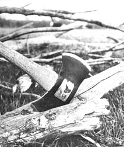

When it comes right down to basic survival, there is one tool that definitely outclasses all others and that's a good double-bitted axe. In fact, with a sharp axe there's not much you can't do in the way of providing food and shelter . . . even to making a new axe handle if the old one breaks. This tool must be kept sharp, however, and you must know how to use it correctly. Otherwise, an axe can be extremely dangerous, as many would-be woodsmen have learned by badly gashing a leg.
Growing up on a Missouri farm, I learned to use an axe at an early age; there was firewood to cut, brush and hedgerows to clean out and fenceposts to cut and split. I learned much from a part-Cherokee uncle who, shunning the rest of the world, made a living doing a little trapping and dog training (hunting dogs) for city folks. To watch him cut and split a pile of logs was sheer joy. The axe was an extension of his arm that did his absolute bidding and never seemed to tire him.
You should know the first rule of good axemanship if you're interested in mastering this tool: Buy a quality axe that is well suited to the jobs you'll put it to.
There are many styles and manufacture of axe and, sad to say, many are of poor quality. Stay away from surplus stores and bargain military axes. They're made of inferior metal and their edges become round as donuts after a few blows. There is absolutely no way you can sharpen such a tool and keep it sharp.
If you want a bargain "cheap" axe, watch the country auctions. An axe may be old and its handle may be cracked or loose . . . but if the head is n't cracked or broken, the axe can be easily repaired and it will probably sell for less than a dollar. (Such an axe was likely bought new from a small town hardware store so, if you can't find a bargain at an auction, try the local outlet in any small farming or mountain town.-JS)
As for axe "style" or design, decide what you want the tool to do and then try to find the ideal axe for the job. If you plan mainly to split fireplace logs, for instance, get a single-bit (blade) axe with a fat, wedge-shaped blade. It won't stick in the log ends so easily and the extra weight of the head will help provide splitting force. For tree felling or building a log cabin, get a heavy (3 1/2 pound) double-bit axe with a long handle. This combination will almost swing itself through long hours of work . . . especially if you keep both blades extremely sharp and thin.
I've used many axes and my all-around favorite for anything from cutting a sapling to splitting a few fireplace logs to providing shelter and fire while camping is a small version of the double-bitted Hudson Bay style. I prefer a handle about six inches shorter than standard. For me, this is a beautifully balanced tool but you must realize that an axe is a very personal thing. If you plan to use one much, try several styles and weights to find exactly the one for you.
I hone one blade edge of my favorite axe razor sharp and, with it, I can slice off a two-inch limb with one blow. The opposite edge of the blade is never sharpened quite so drastically and is used for everything from splitting to cutting roots.
Sharpening an axe blade is no mystery but does take a bit of patience and time. Merely file the nicks out of the blade (keeping the existing bevel), then hone with a round axe hone.
And there's the catch: It takes a lot of elbow grease to put a sharp edge on a blade and most beginning axesmen just won't take the time. A seasoned woodsman, however, knows that a really sharp edge makes a safer axe: It's the dull blades that glance (rather than bite in) and make the bad gashes on legs and feet.
While you're putting an edge on your axe, check the head and see if it's loose. If it is, drive a wooden or metal wedge into the head end of the handle.
Hang your axe up in the cabin when you're not using it. Never leave it leaning against a wall or sticking in a live tree. An axe can be an extremely dangerous hazard either way and, in the second case, the tree will be permanently scarred and-possibly-killed.
An axe left sticking in a block of wood may be picturesque but is also very dangerous. This is hard on the blade, too, as it draws moisture from the green wood and can be come rusted and pitted. The best idea (for both the blade and innocent bystanders) is a sheath that is kept on the blade at all times the axe is not in use. Such a sheath should be kept well oiled with a good grade of gun oil.
Although an axe can be used (and is, often, by farmers) to chop holes in ice, the blade should always be warmed first near a fire or by blowing on it. A cold blade is extremely brittle and can break quite easily.
Before you do any work with an axe, make sure the area around you-the ground, overhead, left, right, front and back-is completely clear of brush, branches and debris. The smallest limb can catch the blade and jerk you off balance and the tiniest twig under your feet may roll, cause you to fall and badly injure yourself.
Plant your feet firmly in a comfortable, wide stance and look directly at the place you plan to hit with the blade. Hunting archers have a trick of concentrating on the smallest spot they can see, rather than the overall target. If you do the same you'll come closer to hitting the mark.
Grasp the axe handle about two inches from the end with both hands close together. Position the blade on the spot in front of you and-with a smooth swing-pull the axe back, letting it swing up and past you on one side. You'll have to swing the axe up to keep it going but when it reaches the top of its arc it will start to fall of its own accord. All you have to do then is guide it for an easy, effortless cut.
The way not to handle an axe (and often tried by beginners) starts with the axesman picking the tool straight up in front with one hand on the end and the other in the middle of the handle. Folks trying this method usually slide the middle hand back to the end of the handle at this point as they lift the axe straight above their heads. With a mighty heave, they then "force" the axe down, nearly always missing the mark and wearing themselves out with the first blow.
Using a natural swing, the axe does most of the work. You provide only a bit of help at the start and, with some practice, even an out-of-shape beginner will be surprised at how long he can "work" at this without getting tired. The trick is to establish a rhythm that suits you and that you can keep going until you finish the job.
One summer I worked as a laborer pouring concrete street gutters. This requires miles and miles of forms and thousands of stakes to hold those forms in place. The mallet swing of the stake drivers is exactly like the motion I'm describing here for axe work. With this easy approach, the 68 year old, 120-plus pound man I worked with could drive stakes all day just as fast as I could position and hold them. He never missed (believe me, I know) and you could count cadence to the blows of his mallet. Although this idea applies most directly to chopping rather than splitting or lopping off limbs, the principle carries through and you'll find yourself using much the same rhythm for these jobs.
When felling trees, first make sure that everyone else is out of the area. Then determine the direction in which the tree leans (and they all lean a little). It will be easiest-but it's not necessary-to fell the tree in the direction in which it leans. Once you've decided the way you want the tree to fall, make a cut on that side of the trunk.
Make this cut somewhat more than half way through the tree. Then start another cut on the opposite side of the trunk and a little above the first cut. Keep chopping until you hear a crack . . . then lay down your axe and run as fast and as far as possible. That may be a slight overstatement . . . but never, never stand behind a falling tree. The butt can kick back and kill you faster than you can possibly move out of danger.
With the tree down, you c an begin trimming off limbs. Start at the base and cut toward the top. On larger trees, always determine beforehand if the tree will roll or fall toward you when a limb starts to break. Many log gers have been killed or maimed this way.
Once the branches are removed, you're ready to cut them and the main trunk into desired lengths. If the tree is extremely large and you've had a bit of axe practice, stand on top of the trunk-with feet spread wide and firmly planted-and chop on the side of the log between your feet. For smaller trees use the same principle and, standing on one side of the trunk, reach over to chop into the opposite side.
Cut small pieces of firewood to length over a larger log. Never lay the pieces directly on the ground for this job; the ends can fly up and cause injury. When splitting short chunks, stand each piece on end or lay it in the crotch of another log.
Splitting a log for fence posts or rough beams requires an altogether different technique. As before, if you use an axe, use one with a fat wedge-shaped blade and-as my uncle always stressed-let the log split itself. Give each stroke a little time before removing the blade for the next. In many cases, if you wait just a bit, you'll hear a faint pop as the fibers grudgingly release and separate.
You may need to use wedges and a heavy mallet to split some woods such as wild cherry and Osage orange. There are wooden wedges (sometimes called gluts and made on the spot when needed), heavy steel wedges, wooden mallets (mauls) and steel sledges. Although real purists still refuse to drive a steel wedge with a steel sledge, such practice is generally accepted these days. No self-respecting woodsman would ever drive a steel wedge with his axe, however, nor would he ever drive one axe with another axe or a sledge.
An axe is not a wedge, nor a sledge nor a maul. It is a chopping tool and should be used for that and that alone. Driving steel wedges with an axe and using an axe as a maul or a wedge will sooner or later (and probably, sooner!) ruin it.
Wedges come in sets since you always require at least two-one to release the other-and, once you start driving them in, you're committed until the log splits. If you find both your wedges frozen in a particularly difficult log, you can split out a few gluts (which can be driven with an axe) to relieve them.
There's a rich sense of accomplishment in learning the correct use of an axe and this general introduction should go along way toward helping any beginner master the tool. Don't be discouraged if your original attempt at axesmanship produces little more than kindling, however. You'll probably improve rapidly and-if you get nothing else from your first day-you're sure to sleep well that night!
|
Always clear area of swing before beginning axe work. Debris under feet in this photo should be avoided whenever possible. |
Stand on one side of log or large branch and reach over for cut. (Note that this axeman is left-handed.) |
Work from butt of tree toward top when lopping off limbs. Again, chop across log. |
|
Place small logs in crotch of larger for splitting. An axe can easily glance off a piece of wood lying loose on the ground. |
Cut small firewood over larger log. Little pieces cut on the ground sometimes fly up and hit inept axesmen in the face. |
Same technique works for medium-size sticks too. |
|
Never, but NEVER, leave an axe sticking in a stump or log. It just invites you to trip and fall over it. |
 Bend small saplings over and slice them off as close to the ground as possible. Make the cut as square as you can. |
Square-sawn, seasoned fireplace logs are easy to split with a single-bit axe. |
|
Right idea . . . WRONG driving tool! Split stubborn woods with a set of metal wedges?but never drive those wedges with an axe (see text) |
|
|